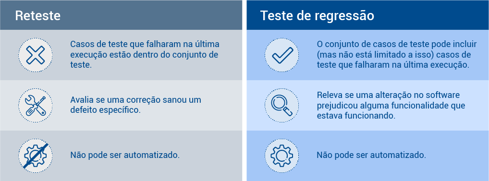

Como sugestão, configure a opção de leitura de caracteres e de pontuação de seu leitor de tela para o grau máximo de leitura, a fim de que os códigos disponibilizados neste material sejam lidos corretamente. No caso do NVDA (NonVisual Desktop Access), para localizar a opção Grau de pontuação/símbolos, acesse Preferências – Configurações – Fala. Altere o padrão Pouco para Tudo. Dessa forma, o leitor passará a ler os segmentos de código em sua totalidade.
Testar um software é um processo organizado e planejado. Além disso, não é um processo único, pois tem várias técnicas e características. Com a evolução na engenharia de software e do desenvolvimento em si, novos tipos de teste foram sendo pensados de maneira que cubra os mais diversos aspectos de um software – desde sua interface e a interação com o usuário até as questões de segurança, passando por questões de desempenho e de garantia da qualidade de software.
A seguir, serão explorados vários dos tipos de testes praticados no desenvolvimento de sistema. Vale ressaltar que nem todos os projetos utilizarão todos os tipos de teste; cabe ao time de desenvolvimento e de testes identificar aqueles mais adequados às necessidades do projeto, à realidade da equipe e às exigências do cliente.
Os testes de software podem ser realizados de duas maneiras: manualmente ou automaticamente, com o apoio de uma ferramenta de automação.
O teste manual é realizado por pessoas, geralmente um analista ou especialista em testes. A pessoa deverá testar passo a passo os casos de teste, com bastante atenção às condições que o teste impõe, e verificar seus resultados. Há um aspecto subjetivo que pode ser positivo no teste manual, já que são seres humanos avaliando o sistema. Essa subjetividade pode revelar outros problemas com baixa usabilidade ou falhas não observadas anteriormente no sistema.
Geralmente é um teste de baixo custo e que não depende de grandes configurações anteriores. Por outro lado, são testes mais lentos e, pela mesma subjetividade que pode ajudar, há boa chance de algum problema passar despercebido por quem testa.
Figura 1 – Benefícios do teste manual
Fonte: adaptado de Global App Testing (c2023)
A imagem mostra, ao centro, um notebook sob duas telas de software e uma pessoa sentada nele. Há textos e ícones em volta dessa imagem, os quais são, a partir do sentido horário, partindo do canto superior direito: no ícone de uma pessoa à frente de uma tela, “Oportunidades para testar usabilidade”; no ícone de foguete sobre uma tela de computador, “Pode-se iniciar o teste imediatamente, sem a necessidade de configuração de um teste automatizado”; no ícone de notas de dinheiro, “Melhor custo-benefício para testes únicos simples”; no ícone de cérebro com uma lâmpada, “Mais adequado para testes improvisados (ou testes aleatórios) que não contam com um plano e podem levar a resultados inesperados”; no ícone de lupa com um V sobre uma tela, “Mais adequado para testes exploratórios”.
Os testes automatizados, por sua vez, são realizados por softwares ou bibliotecas de linguagem que exigem uma configuração inicial (scripts, códigos ou passos configurados) para a execução de um teste. Após essa configuração, o teste pode ser executado e reexecutado com muita agilidade e sem a necessidade da interferência de uma pessoa, mostrando, na ferramenta, se o resultado esperado para uma funcionalidade testada foi alcançado ou não.
Esses testes são bastante lógicos: se o teste produzir determinado valor ou atingir resultado esperado, então ele passou; se o teste produzir valor ou resultado divergente do esperado, então ele falhou. Por isso, são muito confiáveis, sem risco de interferência em razão de subjetividades. Podem ser mais caros, pois dependem de ferramentas específicas, e não detectarão problemas que pessoas poderiam observar, como de usabilidade. Também levam mais tempo (e exigem mais expertise) para serem configurados ou programados, mas, uma vez que isso é feito, a execução dos testes é muito mais veloz que o teste manual.
Figura 2 – Benefícios do teste automatizado
Fonte: adaptado de Testinium (2021)
A imagem mostra, como na anterior, um notebook sob uma tela de software e atrás dele um monitor, do qual sai outra tela de software. Acima, no topo da imagem, há a frase “10 benefícios do teste automatizado”. A partir daí, em sentido horário, constam os seguintes textos e ícones: “Captura bugs mais rápido” e um ícone de inseto; “Implantação mais rápida do software” e um ícone de foguete; “Eficiência de custo e tempo” e um ícone de relógio; “Qualidade contínua” e um ícone de setas circulares; “Melhores insights sobre o projeto” e um ícone de lâmpada; “Maior precisão” e um ícone de alvo, “Alto volume de testes” e um ícone de engrenagens; “Testes de estresse” e um ícone de atleta levantando peso; “Fluxo de trabalho mais eficiente” e um relógio entre duas setas circulares; “Projeto pode ser lançado mais rapidamente para o mercado” e um ícone de gráfico.
É comum (e desejável) que ambos os tipos de teste sejam utilizados no processo de teste de um software. Algumas funcionalidades e alguns aspectos do sistema se beneficiarão mais de testes manuais (como nos testes de aceitação, por exemplo, como você verá a seguir), outras são mais beneficiadas com testes automatizados (em testes de regressão, por exemplo). Também se deve levar em consideração a expertise da equipe e o tempo disponível para testes. No entanto, em projetos modernos, é recomendável que ao menos um tipo de teste automatizado seja aplicado ao projeto.
Testes funcionais são aqueles que verificam a funcionalidade e as características de um sistema sem adentrar em questões técnicas, como código-fonte ou estruturas de banco de dados. Por essa razão, também é denominado teste de caixa-preta (em que se vê o exterior do programa, mas não o interior). O foco nesse tipo de teste fica nos valores informados como entrada de dados e saídas obtidas pelo programa, comparando-as com o que se esperava obter.
Dentro do teste funcional ainda há técnicas próprias que podem ser aplicadas. Mais detalhes podem ser obtidos no conteúdo Técnicas de teste desta unidade curricular.
Figura 3 – Testes de regressão
Fonte: Pixabay (2015)
imagem de uma lupa localizando um inseto na tela do computador cercada de quatro setas que formam um ciclo.
Alterações em código-fonte, correções aplicadas ou funcionalidades novas implementadas em um sistema podem trazer efeitos colaterais no software, trazendo falhas ao que já estava funcional anteriormente. Testes de regressão são usados para garantir que alterações em um software não afetem negativamente o que já foi testado e está funcionando bem. Procura, portanto, assegurar que o sistema não regrediu em questão de qualidade, mantendo-o confiável.
A forma mais simples de teste de regressão é reexecutar uma bateria de testes manuais previstas nos planos de teste do projeto. Entretanto, em razão de restrições de projeto, de equipe, tempo e ferramentas, pode ser que alguns cenários acabem ficando de fora, o que pode trazer riscos ao projeto. Isso porque quanto mais o software se expande, mais casos de teste vão surgindo, tornando o processo de teste mais oneroso.
Outra alternativa, em muitos casos mais eficiente, é a automatização dos testes, ou seja, usar softwares ou bibliotecas de linguagem de programação que permitam a criação de casos de teste e a execução automática desses casos dentro do software. Entre essas ferramentas está o teste unitário (em Java, utiliza-se JUnit para isso). Uma vez configurada a ferramenta e desenvolvidos os casos de teste, basta acionar sempre que houver uma mudança no código ou agendar a execução periódica dos testes e aguardar os resultados para verificar se houve alguma falha. Esse tema será abordado com mais detalhe no conteúdo Testes unitários automatizados desta unidade curricular.
De forma geral, o mais adequado é que alguns testes sigam sendo realizados manualmente enquanto outros são automatizados.
O teste de confirmação é aquele realizado após a correção de um problema verificado no sistema, possibilitando ao testador confirmar que o problema já não ocorre mais ou para retornar ao time de desenvolvimento caso o problema persista. Também é conhecido como reteste e ocorre regularmente nos sprints do projeto usando método ágil.
Não há uma técnica específica. Aplica-se, aqui, teste manual ou automatizado. O único ponto é que o testador precisa executar exatamente o mesmo caso de teste que evidenciou o erro (não é necessário criar um novo caso de teste).
Teste de confirmação não é igual a teste de regressão. Enquanto os testes de confirmação são aplicados especificamente a defeitos recém corrigidos, os testes de regressão são mais abrangentes e acontecem após testes de confirmação.

Figura 4 – Reteste (teste de confirmação) versus teste de regressão
Fonte: adaptado de Grimms (c2023)
Tabela cuja primeira coluna tem título “Reteste” e a segunda “Teste de regressão”. Linha 1, coluna 1: “Casos de teste que falharam na última execução estão dentro do conjunto de teste”. Linha 1, coluna 2: “O conjunto de casos de teste pode incluir (mas não está limitado a isso) casos de teste que falharam na última execução”. Linha 2, coluna 1: “Avalia se uma correção sanou um defeito específico”. Linha 2, coluna 2: “Releva se uma alteração no software prejudicou alguma funcionalidade que estava funcionando”. Linha 3, coluna 1: “Não pode ser automatizado”. Linha 3, coluna 2: “Pode ser automatizado”.
Conceitualmente próximo dos testes funcionais, os testes de aceitação estão mais ligados aos clientes e envolvem os usuários finais do software para a validação das funcionalidades e dos requisitos implementados no sistema.
Figura 5 – Teste de aceitação cerifica o que está de acordo ou não com o que o usuário final necessita
Fonte: Pixabay (2014)
Prancheta com checklist, algumas lacunas marcadas com V e outra com X. Um lápis à direita.
Geralmente são testes elaborados com base em histórias do usuário. O teste de aceitação, que parte da visão do cliente sobre o sistema, diferencia-se, assim, dos demais testes de sistema, que partem da visão dos desenvolvedores sobre os requisitos.
Em metodologias mais antigas de desenvolvimento software, geralmente seriam testes realizados apenas no final do desenvolvimento e antes da implantação. Com os métodos ágeis e uma proximidade maior do cliente, geralmente acontecem em ciclos (no Scrum, testes de aceitação podem ser realizados nas reuniões de revisão dos sprints).
Há três estratégias principais para teste de aceitação. Veja, a seguir, quais são elas.
São elaborados com base em planos de testes pensados com o mesmo detalhamento dos testes de sistema. Podem ser automatizados, executados pelo time de teste ou executados por representantes do cliente.
Geralmente são executados pelo cliente. São testes sem um roteiro definido (as funcionalidades do sistema a serem exploradas são identificadas e documentadas, mas não são desenvolvidos casos de testes para serem seguidos). Os usuários testadores exploram o sistema, executando tarefas cotidianas e observando inconsistências.
Nesta modalidade, um número maior de potenciais usuários (não necessariamente ligados ao cliente) fazem testes livremente. É um tipo de teste bastante aplicado em softwares como o WhatsApp, que disponibiliza versões exclusivas do aplicativo com novas funcionalidades a usuários cadastrados. Com base nos dados coletados do uso desses testadores, a equipe pode ajustar ou remover funcionalidades do sistema.
Os passos gerais para realizar atividades de teste de aceitação são:
Os smoke tests, ou testes de fumaça, são testes rápidos que verificam as funcionalidades básicas de um sistema. Esse teste deve determinar se o build (a compilação) do sistema está gerando um software estável ou não. É semelhante a um teste de aceitação, mas de maneira bastante resumida, devendo se ater aos recursos mais importantes da aplicação, ou seja, é um teste mínimo executado rapidamente após um build.
Sempre que novas funcionalidades são desenvolvidas e integradas ao sistema, recomenda-se a aplicação do smoke test. O objetivo é informar problemas com agilidade e bloquear a versão, caso necessário.
Figura 6 – Fluxo do smoke test
Fonte: adaptado de Martins (2021)
A imagem mostra, à direita, uma pilha de três cubos com uma legenda “Compilações iniciais”. Do cubo inferior, sai uma linha que liga um ícone de alerta, o qual está com a legenda “Smoke test”. Acima, à esquerda, há um cubo com um X vermelho e a legenda “Compilação rejeitada”. À direita do smoke test, há uma linha que leva a uma área com legenda “Compilações aprovadas” e dois cubos com sinal verde de aprovado.
Os testes podem ser manuais ou automatizados. No caso do teste manual, o time de testadores recebe a nova versão compilada do software e executa os casos de teste de alta prioridade. Se eles falharem, a versão é rejeitada e retorna ao time de desenvolvimento para correções. Se os testes passarem, os demais testes funcionais são executados de acordo com o previsto no projeto.
Os testes automatizados podem agilizar bastante o smoke test, podendo executar imediatamente antes ou depois da compilação do sistema. Os desenvolvedores podem rapidamente reter a versão para correções, não precisando passar pelo time de testadores.
Por definição, nos testes exploratórios, a criação e a execução dos testes acontecem ao mesmo tempo. Ou seja, normalmente são testes que não seguem uma definição formal de planos de testes, mas, sim, a experiência e as observações do testador. Daí o nome do teste: o testador responsável fará uma exploração mais ou menos livre pelo software em busca de inconsistências.
Esse tipo de teste pode ser interessante para casos em que não se tem um conhecimento prévio sobre o sistema; em que não há requisitos formais documentados; em que há pouco tempo disponível; em que seja necessário identificar passos de um defeito aleatório do sistema, em projetos que aplicam metodologias ágeis, que dispensam formalidades e documentações. Também pode ser aplicado como apoio à definição formal de casos de teste no sistema, podendo auxiliar a criação ou expansão de casos de teste do sistema.
Apesar de ser um processo com mais liberdade, a exploração não acontece de maneira aleatória. Geralmente, esses testes iniciam pelo questionamento sobre qual é o teste mais importante que se deve realizar no momento e o planejamento do teste desdobra-se disso.
Uma proposição para o processo de teste exploratório é a seguinte:
Um teste geralmente relegado ao final do processo de desenvolvimento de software, mas que deveria estar presente desde o início do projeto, é o de desempenho, uma modalidade que avalia tempo de processamento, velocidade de transferência de dados, eficácia de consulta em banco de dados, número máximo de usuários conectados, uso de processador e memória da máquina, uso de rede, tempo de resposta a comandos do usuário, entre outros aspectos não funcionais do sistema de software.
Figura 7 – Testes de performance verificam a eficiência do programa
Fonte: Okeke (2022)
Uma tela de computador com um medidor de velocidade, em que um homem empurra o ponteiro para o máximo. Acima, uma barra de progresso.
Veja algumas razões para realizar testes de desempenho:
No contexto de desenvolvimento ágil, o teste de desempenho pode ser aplicado regularmente a cada sprint ou em momentos adequados para isso.
O processo de teste de desempenho variará bastante de empresa para empresa e de projeto para projeto. Algumas técnicas como teste de estresse, carga e volume, abordadas a seguir, podem fazer parte do processo caso a intenção seja testar, por exemplo, a resiliência de um sistema a acessos simultâneos.
De maneira geral, recomenda-se que primeiro sejam identificados os indicadores não funcionais a serem testados. Com base nisso, descobrem-se quais são as ferramentas adequadas para esse teste (softwares de simulação de acesso, por exemplo, poderiam ser usados para verificar número de usuários máximo executando o sistema ao mesmo tempo). Também é importante definir o ambiente (rede, banco de dados, condições de Internet que sejam próximas do cliente, entre outros) onde os testes executarão.
Definem-se, então, os critérios de aceite para os testes (por exemplo, qual é um bom número de usuários conectados simultaneamente) e, com base nisso, estabelecem-se os planos de teste. Com as ferramentas preparadas, então, executam-se os testes, verificando os problemas e realizando os ajustes necessários. É importante que os testes sejam executados repetidas vezes, para confirmar os problemas de desempenho.
Esse é um tipo de teste não funcional especialmente interessante para aplicações web. O teste de carga estabelece e avalia a capacidade de processamento de um software dada uma carga crescente de dados, geralmente conexões de usuários.
Em uma aplicação web, o teste de carga pode ser avaliado simulando um número X de conexões inicialmente e verificando a disponibilidade do sistema. Depois, aumenta-se esse número de conexões, revendo como o sistema está operando, e assim sucessivamente até que se alcance um número próximo ao que seria alcançado no dia a dia do sistema ou até que o sistema apresente falha.
Analogamente, seria possível verificar carga de processos de banco de dados, aumentando gradativamente o número de consultas geradas pelo sistema e verificando a estabilidade de sua conexão com o banco de dados.
Com base nos testes de carga, é possível estabelecer a capacidade da aplicação e identificar fatores limitantes, que podem ser de hardware, de codificação, de rede, entre outros.
Os resultados desse teste geralmente são representados pelo número de transações simultâneas e pela quantidade de usuários conectados ao mesmo tempo no sistema. Podem indicar problemas não só em código como em infraestrutura (a necessidade de um servidor com maior capacidade de processamento, por exemplo, ou uma conexão à Internet com maior banda).
Enquanto os testes de carga geralmente simulam uma alta demanda cotidiana de um sistema, o teste de estresse (ou teste de esforço) simula uma demanda extraordinária, que poderá acontecer pontualmente, mas que poderá levar à falha do sistema. Esses testes são, portanto, usados para garantir a estabilidade e a confiabilidade de um sistema, simulando uma alta taxa de tráfego de dados e registrando a resposta do software a essa demanda. É um teste indicado, por exemplo, para sistemas web que, em razão de uma data específica ou um evento, precisam testar seus limites.
Como exemplo, é possível citar um site de vendas em uma data de liquidação ou um site de inscrições limitadas para um evento. Ambos os casos apresentarão, em um período, uma situação de acesso muito acima do que acontece diariamente. Assim, um teste de estresse pode prevenir que o sistema caia por excesso de acessos.
Além de servir para verificar quanto o sistema suporta de tráfego de dados, o teste de estresse também serve para avaliar como o sistema se comporta após uma falha.
Com base no teste de estresse, assim como no teste de carga, é possível definir ajustes em infraestrutura e no software para garantir mais robustez ao sistema.
Algumas métricas podem ser avaliadas baseando-se no teste de estresse:
Uma das ferramentas mais usados para testes de carga e de estresse é o JMeter, em que o desenvolvedor pode configurar cenários de teste e o software fará simulação de acessos ao sistema.
Mais um teste de desempenho, o teste de volume verifica o comportamento do sistema em situações de grande carga de dados. Diferente dos testes de carga e de estresse, que se preocupam essencialmente com o tráfego de informações e conexões estabelecidas, o teste de volume trabalha com tamanho de arquivos e bancos de dados usados pelo sistema testado.
Para o teste, estende-se o tamanho do banco de dados ou arquivo até um limite estabelecido e, então, o desempenho do sistema é testado, observando-se o tempo de resposta para as ações do usuário e o comportamento do sistema (se erros acontecem, se as funcionalidades são executadas corretamente).
O teste de volume é interessante porque todo sistema, com o passar do tempo, recebe quantidades de dados que podem diminuir o desempenho do software. No tempo de desenvolvimento, os testes funcionais geralmente acontecem sobre pequenos volumes de dados. Assim, o teste de volume pode detectar problemas não observados nos testes comuns. Os dados gerados para o teste geralmente vêm de um software desenvolvido para povoar com dados válidos o banco ou os arquivos usados pelo sistema.
Com base no teste de volume, pode-se identificar, então, o ponto em que a estabilidade do sistema diminui e a capacidade de dados da aplicação. Alguns dados podem ser levados em consideração na análise desses testes:
Entre as vantagens do teste de volume, estão a capacidade de detectar melhorias necessárias em infraestrutura e em código para o sistema, a identificação precoce de gargalos de desempenho e a garantia de que o sistema poderá ser usado no mundo real.
É denominado teste de recuperação o processo de teste não funcional realizado para verificar a resiliência do sistema, se ele consegue se recuperar de falhas ou não. No teste, força-se a ocorrência de uma falha e verifica-se como o sistema se comporta a seguir.
É importante que o sistema seja desenvolvido de tal maneira que, após uma falha, ele possa continuar sua execução tratando essa falha e retornando a um estado consistente anterior do sistema. Essa recuperação deve acontecer em um tempo específico e é essencial em sistemas críticos como de defesa, dispositivos médicos e outros.
Como exemplo de recuperação, pode-se imaginar uma aplicação baseada em rede, processando envios e recebimentos de dados. Se desconectar o cabo de rede e algum tempo depois restabelecer a conexão, então o software deve ser capaz de retomar a transmissão de dados do exato ponto onde parou quando perdeu conexão.
Algumas situações previsíveis podem ser testadas para recuperação:
É importante que o testador se prepare para o processo de teste de recuperação:
Quando se observa mais de uma falha, ao invés de se ocupar com todas as falhas de uma vez, os testadores devem estruturar a situação, escolhendo e priorizando um segmento de cada vez.
Como vantagens do teste de recuperação, é possível citar: a melhoria geral na qualidade do sistema, a elaboração de planos de recuperação de desastres para o sistema, a eliminação de riscos e o aprimoramento do desempenho geral do sistema, tornando-o mais confiável.
O processo também conta com desvantagens: pode ser demorado e custoso por envolver várias etapas e preparações antes e durante os testes; precisa contar com profissionais treinados e capazes de observar de maneira abrangente as falhas e a recuperação; pode apresentar algumas falhas imprevisíveis ou difíceis de alcançar.
Se um sistema armazena dados sensíveis sobre seus usuários ou sobre dados de negócio do cliente, então a segurança desses dados é um requisito, pois é um potencial alvo de acesso impróprio ou ilegal. Para isso, é importante que o sistema tenha um processo de testes de segurança, que buscam brechas ou vulnerabilidades que podem ser exploradas por hackers que tentam invadir o sistema e acessar e/ou corromper dados sensíveis.
O objetivo dos testes de segurança é, portanto, identificar todas as lacunas e as fraquezas de um sistema que possam resultar em perda de informações, prejuízos financeiros e prejuízos na reputação do cliente ou das pessoas envolvidas por dados que param em mãos de terceiros. Tais problemas podem ser solucionados com ajustes no código do sistema ou na infraestrutura.
Vale observar que são testes aplicados para aplicações que estejam conectadas a uma rede (seja interna, seja externa, seja Internet). É um tipo de teste especialmente importante para sistemas web, mas que pode (e deve) ser aplicado para sistemas que funcionam em rede local.
Figura 8 – Princípios dos testes de segurança
Fonte: Senac EAD (2023)
Ao centro, uma tela de computador com uma lupa focando um cadeado. Dela saem setas (sentido horário) para: Confidencialidade (ícone de cadeado e chave), Autenticação (ícone de marca digital), Não repúdio (ícone de apertar de mãos), Autorização (ícone de checklist), Integridade (ícone de base de dados), Disponibilidade (ícone de tela de software com um sinal de check).
É possível classificar sete tipos de teste de segurança. Veja, a seguir, quais são eles.
Um teste automatizado em que um software varre o sistema buscando vulnerabilidades conhecidas. Alguns exemplos de ferramentas usadas são o SecPod SanerNow, o Invicti (ambos pagos) e o Nikto2 (gratuito).
Pode ser manual ou automatizada e tem por objetivo buscar pontos fracos na rede e no sistema, produzindo soluções a esses riscos.
Busca por vulnerabilidade de acesso externo, simulando ataques hackers no sistema. Também é conhecido como pentest.
É uma análise sobre os riscos de segurança observados na organização, classificando-os como baixo, médio ou alto e prevendo medidas para reduzi-los.
É uma inspeção interna dos aplicativos, dos sistemas operacionais e das linhas de código do sistema em busca de falhas de segurança.
Com a ajuda de um hacker contratado para esses testes, realizam-se tentativas sucessivas de invasão ao sistema, expondo falhas de segurança. Também é conhecido como teste red team.
É uma classificação da postura geral da empresa com relação à segurança obtida baseando-se na combinação da varredura de segurança, no hackeamento ético e nas avaliações de risco.
Outra maneira de classificar os testes de segurança é considerar o momento em que são realizados e a origem das ações executadas. A seguir, são apresentados três tipos principais: SAST (teste de segurança de aplicações estáticas), DAST (teste de segurança de aplicações dinâmicas) e IAST (teste de segurança de aplicações interativas).
SAST
Testes de segurança de aplicativo estático, que acontecem nas etapas de desenvolvimento e, ao encontrarem falhas e vulnerabilidades, passam rapidamente para correção. São testes internos, realizados com base no próprio ambiente de desenvolvimento.
DAST
Testes de segurança de aplicativo dinâmico, que são realizados antes da liberação do aplicativo ao cliente (seja a entrega de um sistema desktop, seja a disponibilização de um sistema web ao público). São realizados da parte externa para a interna, ou seja, testa-se em um ambiente externo ao de desenvolvimento, possibilitando a identificação de vulnerabilidades mais visíveis. Também analisam questões de desempenho, como tempo de execução.
IAST
Testes de segurança de aplicativo dinâmico, que são internos e concedem ao testador ou à ferramenta automatizada de teste um acesso maior aos dados e ao código, permitindo detecções mais precisas de vulnerabilidades. Geralmente acontecem no início do ciclo de vida do projeto.
Veja, a seguir, as técnicas que podem ser aplicadas no processo de teste.
Testar as permissões dos diferentes usuários do sistema para verificar se algum perfil está acessando indevidamente recursos que deveriam estar bloqueados a ele. Por exemplo: um vendedor não deve acessar os dados de outros vendedores e informações financeiras em um sistema para uma loja. Para cada permissão, o testador deverá verificar todos os menus, as telas e as funções para detectar se algum recurso está indevidamente acessível.
Além de recursos do sistema, o acesso a determinados dados pode ser restrito a alguns usuários. No exemplo anterior, os dados de salários e faturamento da loja não devem estar ao alcance dos vendedores. Isso pode ser resolvido por meio de permissões no sistema, possivelmente em nível de banco de dados, mas também com encriptação de dados (para senhas e dados de cartões de crédito, por exemplo).
Usar um software para, com base em um usuário conhecido, testar senhas uma após a outra até conseguir acesso ao sistema. Geralmente sistemas aplicam uma restrição de quantidade de tentativas de autenticação, inibindo esse tipo de ataque (ao tentar acessar uma rede social, por exemplo, após um número de tentativas malsucedidas, o acesso pode ficar bloqueado por algumas horas e um captcha ou uma confirmação de identidade por outro meio pode ser requisitada).
Um script é usado maliciosamente para tentar invadir ou prejudicar dados do sistema. No caso de SQL Injection, aproveitam-se as vulnerabilidades na implementação de banco de dados, como consultas não protegidas, e usam-se comandos SQL para a invasão. Já o XSS trata de códigos de script de uma página que apontem para outra página, com a intenção de obter dados ou acesso a esta.
Aplicações web atuais muitas vezes expõem serviços para que outras aplicações possam acessar. Nesse contexto, é importante testar se apenas as aplicações autorizadas estão tendo acesso aos serviços autorizados e se, com base nesse serviço, não se obtém acesso a outras funcionalidades ou dados que deveriam estar protegidos.
É importante informar ao usuário quando um erro acontece, mas nunca devem aparecer dados detalhados da falha, que podem explicitar detalhes do sistema e podem ser usados por invasores para obter acesso. Assim, uma exceção (e principalmente seu stack-trace) não deve ser exposta ao usuário. Ao invés disso, esses detalhes podem ser registrados em arquivo interno de log, que deve estar protegido de acesso externo, mas acessível aos desenvolvedores para investigar problemas.
Considerando o processo tradicional de desenvolvimento de software, de maneira geral pode-se dizer que os testes de segurança devem percorrer todo o processo de desenvolvimento do sistema.
No caso de métodos ágeis, os testes de segurança deverão estar presentes em todos os sprints, em seu planejamento, na implementação e na finalização do incremento de software.